Everyone in the haze
has a dream of forest
InForest - a forest-like space with botanic interactive system
arousing urban people the sensation of the forest.
_role As an interaction designer and architect, I mainly came up with ideas and conceptions base on technology research and then transferred the concepts into prototypes. As a work team, we designed, prototyped, tested and launched the InForest, an urban public breathing space where people could interact with plants just like in a forest.
- _duration 5/ 2016 - 11/ 2016.
- _program Student Research Training Program, Zhejiang University
- _partners Charles Hu (Design Leader), Siyu Lei (Engineer)
- _scope Technology Research, Engineering, Interaction Design, Architecture Design
_introducing
the forest is disappearing
and the urban citizens are lost

People need the forest. For people who forgot already, we should let them remember the feeling of nature.
Imagine if you were leisurely sauntering in a forest, taking in all the sights, sounds and smells of nature. It will the most welcome when you get tired of city’s noise. The concept of InForest originated to produce an interactive, experiential system arousing urban people the sensation of the forest.
Our work started with analyzing the vertical structure of the forest which contributes to people’ s multi-layer sensory experience in the forest. Then we abstracted specific sounds from each layer of the following design.
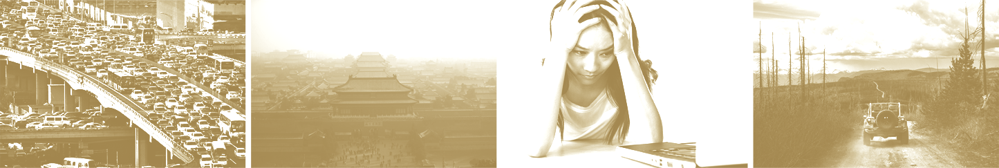
urbanization + nature = ?
China is experiencing the fastest and highest urbanization in the world, which leaves many thorny nature problems like air pollution, dense traffic, and more notably increasing pressure on people. Not surprisingly, urban people are eager to get away from cities and get close to the wild nature without haze once they have a chance.
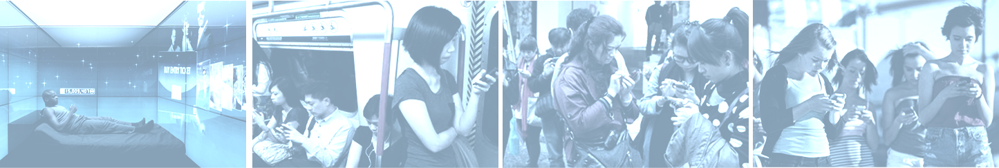
interaction = screen ?
As informative transformation goes further and more profound, whereas ubiquitous screen-based user interfaces have profoundly changed people’s lives, it is estranging people from the real physical world. This context urges me to rethink interaction design on a more significant scale-to design interactive system or environment where people are naturally immersed in.
_interactive technology research
we use technology from Disney + CMU
to inspire us to capture small signals
created by touching the plants
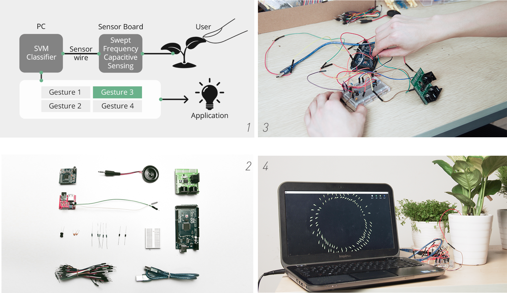
We use the technology called Swept Frequency Capacitive Sensing Technique from Disney Research and Carnegie Mellon University (Touché: Enhancing Touch Interaction on Humans, Screens, Liquids, and Everyday Objects)
To build the sensing system, a single conductive wire links the soil or water to our sensor controller. Through dynamic signal analysis, the sensing system could detect and recognize people’s different interactions (e.g., approach, touch, etc.) with plants.
then by gestures classification experiment,
we selected suitable plants and
got valuable coefficient in results
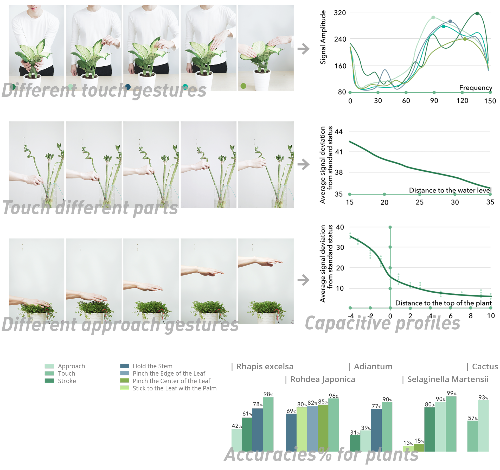
Gestures classification was the next step to enhance plants with rich touch and gesture interactivity. Each transmission from the sensor contained a 160-point capacitive profile from which we extracted a series of features for classification.
After more than 400 times classification accuracies tests for different kinds of plants, we select reliable controlling gestures with accuracies over 80% of each plant for the following application.
_conception
by designing different interaction on different height,
Inforest tend to simulate the nature's feeling
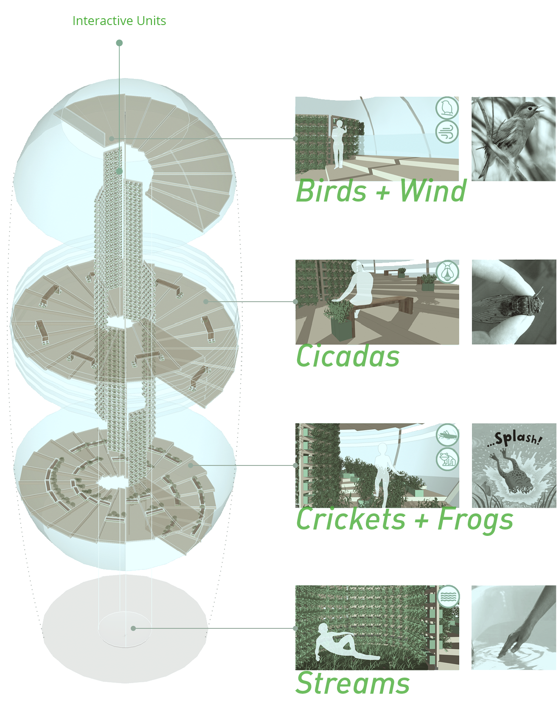
Bird + Wind
People could control the volume of the sound of birds by changing the distance from their hands to the plants. When they touch the plants, they will hear all the birds scatter away suddenly, and they need to move to another location to listen to those birds singing again.
Cicadas
On this floor, people could rest under a tree of cicadas sounds. The sound could be gradually stopped by pinching the leaves.
Crickets + Frogs
Interactive plants units are installed along the trails going upward. People would hear frogs and crickets sound when they walk on the trails and even hear frogs’ jumping into the water when they touch the plants.
Streams
The base of Inforest is an urban interactive public breathing space where people can participate. Our work taps into some of the most basic human instincts, to play and explore. It also generates talk value through a shared experience.
_prototype
thanks for our engineer friend,
we designed and made incredible interaction units that
can mount lots of plants with the watering system
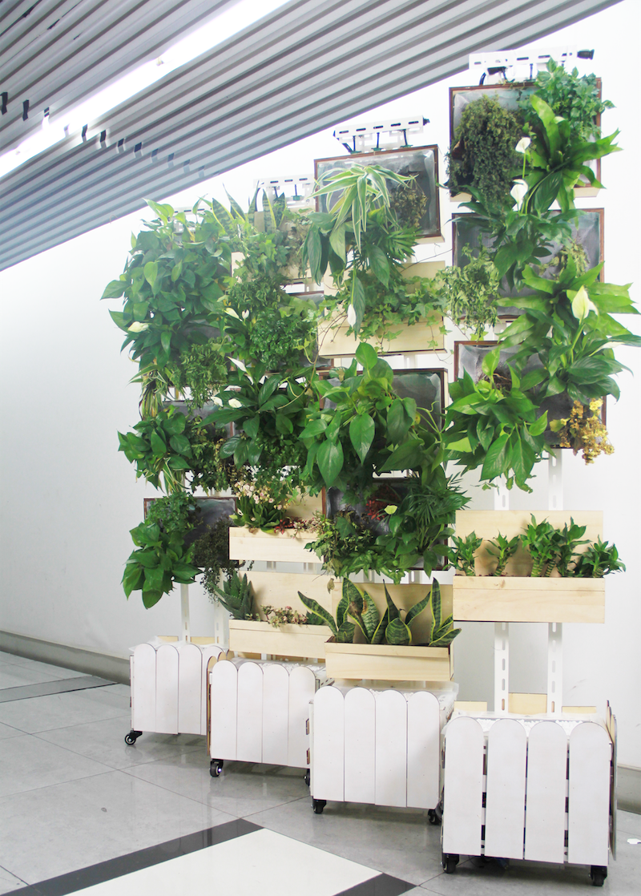
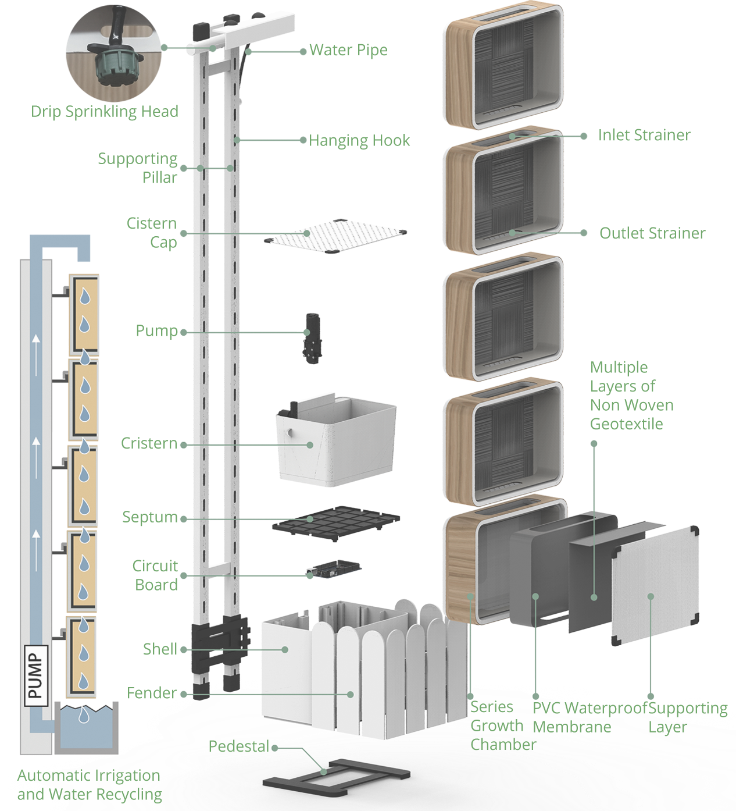
The unit is designed to be low-cost and convenient to maintain and water plants. Also, it can be extended as long as the hanging hook is long enough.
also we had the small space Inforest
well-designed and built... as a model
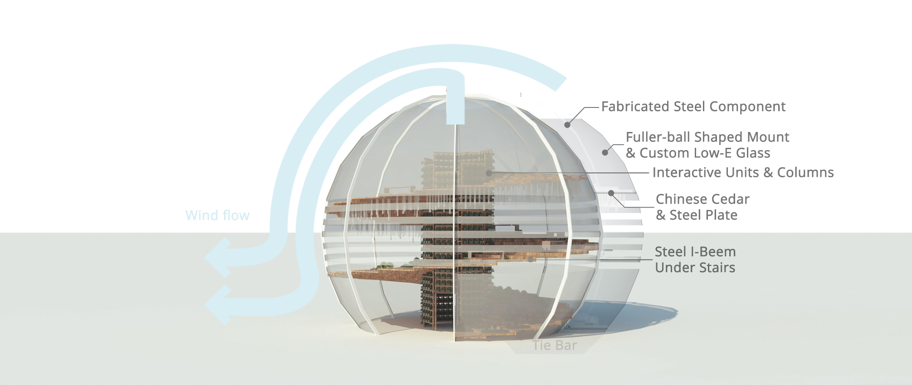
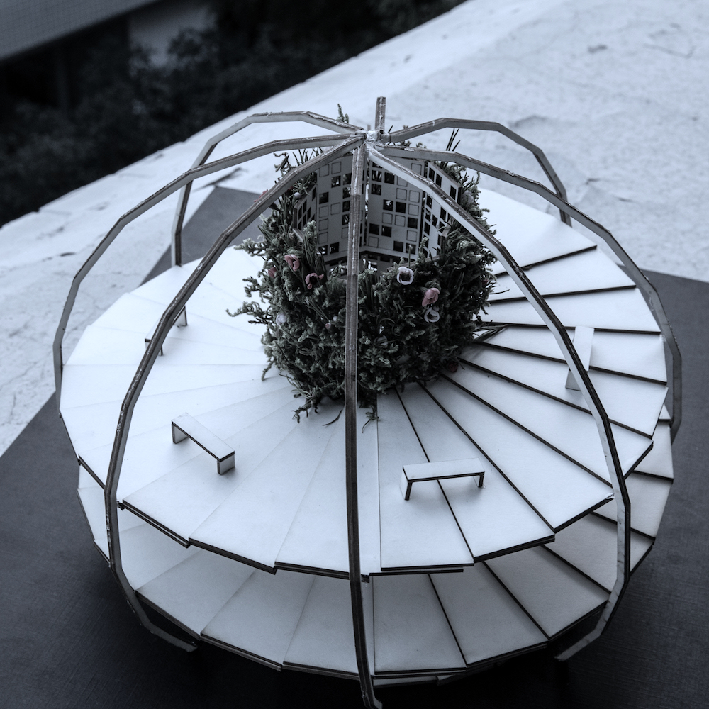
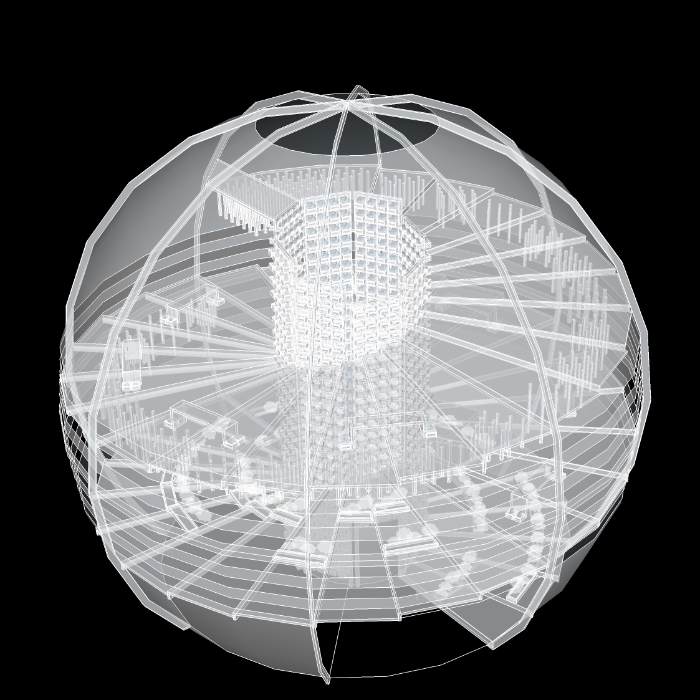
Model only.
_result
Although we didn't have the power to
build an architecture to provide an immersive experience,
we believe our ideas will present our vision
and engage more people to work on the forest issue
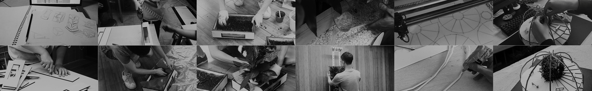
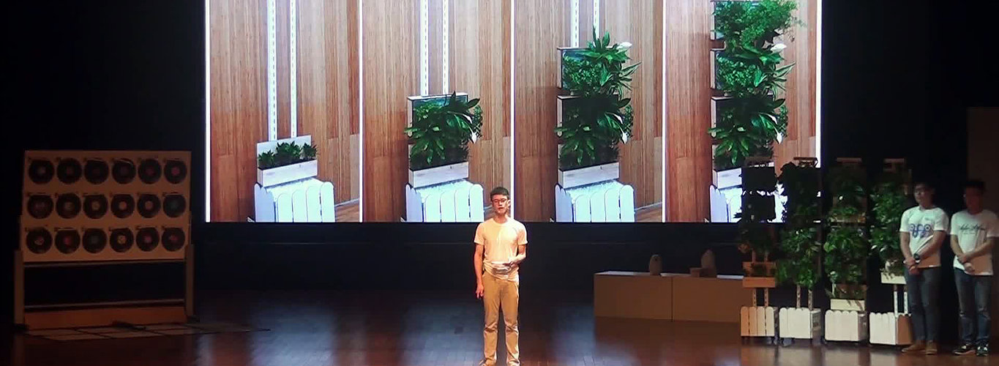
Inforest was published as a conception design on DIP 2016 "The future we design".
Our team also patented our work (Patent Number: CN205508389U and CN201610178497.5) to provide the possibility to convert Inforest into commercial products in the future.